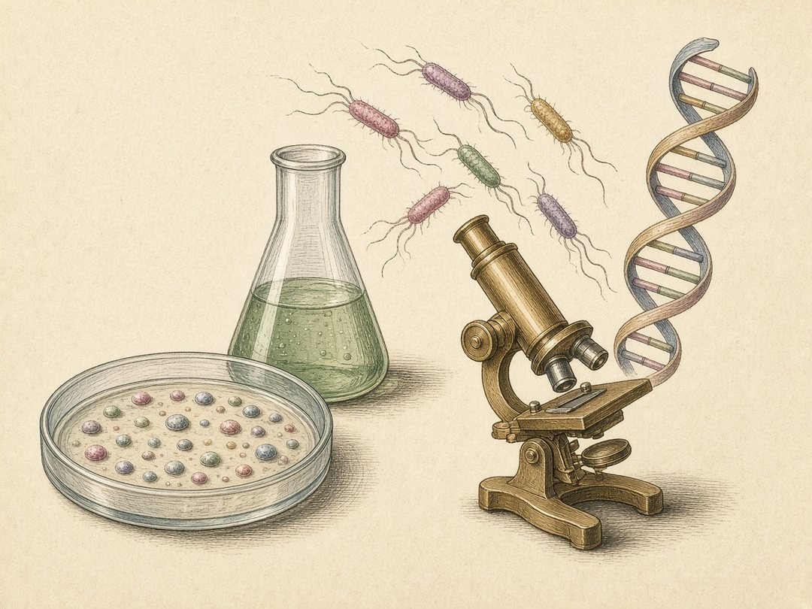

Fundamentals · animated primers
Click-through teaching primers on microbiology, from the chemistry of life through the central dogma, the cell, genetics and evolution, metabolism, ecology and disease to the methods of the lab and the classic experiments that built the field. Each is drawn as a set of hand-tinted plates with a narrator’s caption, in the spirit of DNA from the Beginning. Bacteria come first, with eukaryotic counterparts for comparison.

When I was an undergraduate in Hong Kong, Professor Hoi-Shan Kwan introduced me to DNA from the Beginning, the animated primer from Cold Spring Harbor Laboratory. Its animations impressed me then and still do — all the more so because they were made more than twenty years ago.
With the latest AI tools to hand, I wanted to take the same approach, and introduce the foundational work of my colleagues.
Energy, water, weak forces and the molecules they shape.
Where a cell’s energy comes from
Free energy, coupling, redox potentials and an interactive electron tower; syntrophy on thin margins.
Life in water, at the scale of a micrometre
Buffers and pKa, pH homeostasis, water activity, turgor, diffusion, Reynolds number and surface-to-volume.
Weak forces, precise shapes
Weak interactions, folding and domains, base pairing and supercoiling, bilayers and glycosidic linkages.
How enzymes work, and how fast
Catalysis, Michaelis–Menten, inhibition, cooperativity and allostery, and kinetics in antibiotic action.
Sugars, and the enzymes that join them
Monosaccharides, linkages and nucleotide sugars; glycosyltransferase folds and mechanisms; and how the pneumococcal capsule is built.
Copying DNA, reading it, making and placing proteins, and repairing the genome.
Every cell copies its DNA before it divides
From Meselson–Stahl and Kornberg to the bacterial replisome, with a mutant explorer.
Reading a gene into RNA
RNA polymerase, sigma factors, termination and regulation in bacteria, with eukaryotic comparisons.
From messenger to protein
Proteins, tRNA, the ribosome, the genetic code, and the antibiotics that jam translation.
After the ribosome: sending and finishing proteins
Signal peptides, Sec and Tat, SRP, YidC, envelope assembly, secretion systems and glycosylation.
Keeping the genome intact
Damage, direct reversal, excision and mismatch repair, recombination, SOS and translesion synthesis.
Envelopes, organelles, division and movement.
The layers that hold a microbe together
Gram-positive, Gram-negative and acid-fast envelopes, peptidoglycan, LPS, teichoic and mycolic acids, archaeal membranes.
The bacteria inside our cells
Organelles, the secretory and endocytic pathways, pathogens that hijack them, and the bacterial origin of mitochondria and plastids.
Making two cells from one
The fts genes, Z ring, Min and nucleoid occlusion, MapZ, the septal wall, and drugs that stop division.
How bacteria move, and decide where to go
The flagellar motor, runs and tumbles, the chemotaxis circuit and its adaptation, pili and gliding.
How bacteria choose which genes to use, and why identical cells differ.
From promoter to terminator
Promoter to terminator, operons, and the causes of polar effects, including overexpression and antisense from cassettes.
How bacteria decide what to do next
Regulons and network motifs, the lac operon, two-component systems and sigma factors; quorum sensing, the stringent response and cyclic nucleotides; sporulation and other developmental programmes.
Why identical cells behave differently
DNA methylation and what reads it; phase variation, phasevarions and pneumococcal opacity; bistability, persistence and why clonal populations hedge.
Inheritance, evolution, gene flow, phages, genomes and the tree of life.
Two genes, one trait
Bateson’s sweet-pea crosses, the 9:7 ratio, and the main kinds of epistasis.
How bacterial populations change
Mutation, selection, drift and recombination; the fluctuation test, and what it does and does not prove.
Watching bacteria evolve in a flask
The long-term evolution experiment, transfer bottlenecks, clonal interference, fitness landscapes and epistasis, and the cost of resistance.
How bacteria acquire genes from one another
Transformation, conjugation and transduction; insertion sequences, integrons and ICEs; and the barriers that make transfer rare.
Replicons that are not the chromosome
Replicons, copy number and incompatibility; partition, dimer resolution and addiction systems; cost, host range and what is on a vector.
Viruses of bacteria, and what they taught us
Lytic and temperate cycles, the λ decision, phages as tools of molecular biology, coevolution and phage therapy.
How bacteria fight phages
Restriction–modification, CRISPR, abortive infection and the new anti-phage arsenal; second messengers, defence islands, and the counter-measures phages use.
How a bacterial genome is arranged, and what a species contains
Size and coding density, replichores, GC skew and codon usage; core, shell and cloud; open and closed pangenomes, genomic islands and genome reduction.
Reading trees, naming microbes
Alignments, substitution models, likelihood and Bayes, long-branch attraction, ANI and GTDB, and deep time.
Carbon, energy and the element cycles.
Sugar to precursors, energy and reducing power
EMP, ED and pentose phosphate pathways, precursor metabolites, the TCA cycle, anaplerosis, overflow and catabolite repression.
Making ATP with and without an acceptor
Chemiosmosis, ATP synthase, branched respiratory chains, alternative acceptors and fermentation end products.
Fixing carbon and nitrogen, cycling the rest
Six ways to fix CO₂, phototrophy, nitrogen fixation and the N, S and methane cycles, and who runs each step.
How microbes grow, survive, live together and shape their world.
Batch, chemostat and growth laws
The batch growth curve, exponential maths, measuring growth, the chemostat and Monod kinetics, maintenance, and the ribosome growth laws.
Surviving heat, starvation and saturated brine
Stress responses, stationary phase and GASP, biofilms, dormancy and persistence, and the limits of life.
Communities, diversity and interactions
Community assembly, diversity metrics and rarefaction, syntrophy, competition and predation, microbiomes, and why correlations are not causes.
Viruses, the immune system, and how microbes cause disease.
Particles, classes and evolution
What viruses are, how they reach messenger RNA (the Baltimore classes), how they replicate, and how they mutate and spill over from animals.
Innate and adaptive defences
Barriers and pattern receptors, complement, phagocytes, antigen presentation, T and B cells, antibodies, memory and vaccines.
How microbes cause disease, and how it spreads
Steps of infection, virulence factors and toxins, secretion systems, immune evasion, dysbiosis, and epidemiology basics.
Seeing, growing, building, editing, sequencing and analysing.
From the diffraction limit to AlphaFold
Light, super-resolution and electron microscopy, cryo-EM and tomography, crystallography and structure prediction.
Growing, isolating and measuring microbes
Pure culture, media and anaerobes, enrichment and culturomics, qPCR, omics, single-cell methods and reporters.
Ways to join DNA
Restriction cloning to Golden Gate, MoClo and Gibson; recombineering and allelic exchange.
An immune system with a memory
CRISPR as bacterial immunity, how Cas9 finds and cuts DNA, and how it became a genome-editing tool.
Reading DNA a billion molecules at a time
Sanger to nanopore: how each platform holds molecules apart and detects a base, what each gets wrong, and which to choose for a given job.
Finding the genes a cell can’t live without
Transposon libraries, sequencing insertion sites, and calling essential genes.
From raw reads to answers
Quality control, mapping, assembly, annotation, metagenomic binning, differential abundance and reproducible pipelines.
Drugs and resistance, and microbes put to work.
How drugs work, and how bacteria escape them
Targets and selective toxicity, resistance mechanisms and genes, MIC and breakpoints, synergy, tolerance, PK/PD and the empty pipeline.
Microbes at work
Industrial fermentation, bioremediation, plant–microbe interactions, food safety, clinical diagnostics and synthetic biology.
Statistics, models, and working safely and openly.
Reading the numbers honestly
Replicates, power, p-values, multiple testing, mixed models, Bayes and compositional sequencing data.
Turning biology into equations
Exponential, logistic and Monod growth, predator–prey cycles, flux balance analysis and SIR epidemics, and the limits of models.
Working safely, securely, honestly and openly
Biosafety levels and cabinets, select agents and dual-use oversight, IBC/IACUC/IRB, authorship and misconduct, reproducibility and FAIR data.
Classic experiments, and the logic that made them decisive.
Life comes only from life
Spontaneous generation and the swan-neck flask, hay infusions and spores, fermentation, and the first controlled vaccine trial.
One microbe, one disease
Anthrax and serial passage, solid media and pure culture, tuberculosis, and the postulates tested against real diseases.
Life on rocks and gases
Energy from sulfur and ammonia, nitrifiers on silica gel, elective culture, and the Winogradsky column.
A contagious living fluid
Tobacco mosaic and the first virus, enrichment culture, nitrogen fixers, and the Delft school.
The transforming principle
Pneumococcal types, Griffith’s mice, purifying the transforming principle, and the enzyme test that pointed to DNA.
Bacteria have genes too
The fluctuation test, bacterial mating, replica plating and transduction.
A third form of life
16S rRNA as a molecular clock, oligonucleotide catalogues, the archaea, and the three domains.